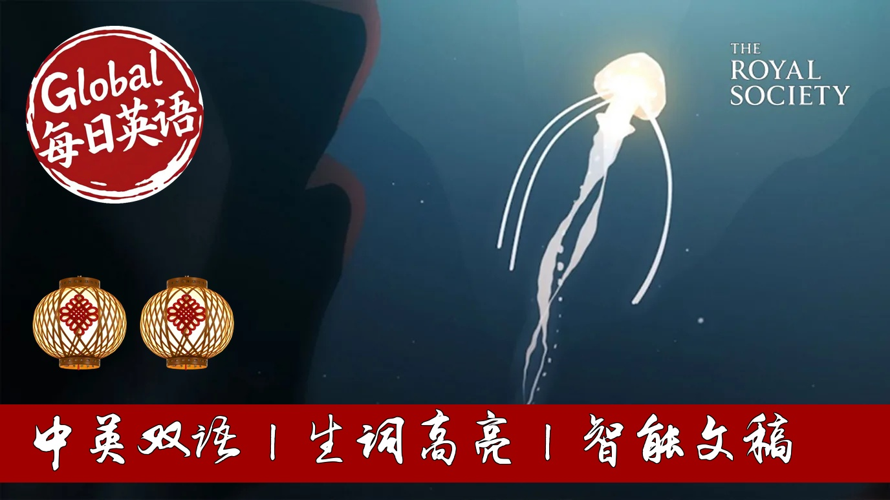

【BBC科普精选：未知的深海】
Summary: The ocean covers over 70% of the planet but remains largely unexplored due to immense pressure and technological limitations. New technologies like submarine robots are revealing extraordinary creatures and underwater landscapes, including the deepest trench on Earth. Tragically, scientists discovered plastic inside a new crustacean species at 7,000 meters depth, highlighting severe human impact. The ocean produces half of Earth's oxygen and regulates climate, yet pollution and dead zones are increasing. Despite being vital to all life, ocean conservation efforts remain insufficient.
摘要： 海洋覆盖地球超70%面积，但其探索程度远低于太空，因水压巨大且技术受限。潜艇机器人等新技术正揭示奇特生物和海底地貌，包括地球最深的马里亚纳海沟。科学家在7000米深处新种甲壳动物体内发现塑料，印证人类污染已触及深海禁区。海洋产生地球一半氧气并调节气候，但污染与缺氧区持续扩大。尽管关乎所有生命存续，当前海洋保护力度仍如杯水车薪。

⏱️ Estimated Reading Time: 6 min.
📚 四级生词 📚 六级生词 📚 雅思生词 📚 托福生词 📚 专八生词 📚 SAT生词 📚 考研生词 📚 GRE生词
The ocean covers over 70% of our planet and yet what we know about it barely scratches the surface.
Benefits swell is a largely unexplored universe until recently beyond the gaze of human eyes.
So why do we know so little about the ocean?
For a start immense pressure presents huge challenges for divers and equipment alike.
In many ways it's easier to send a mission to space.
But with new technology such as submarine robots this hidden realm is starting to reveal its secrets.
So what's down there?
Well there's water, lots of it.
1,419,120,000 cubic kilometers to be about as precise as you can be.
And in that water there's fish, the main source of protein for around 3 billion people.
But there's a lot more than just fish down there.
Extraordinary otherworldly creatures dwell in the depths.
With new ones discovered all the time.
Many are gelatinous, jellyfish that disintegrate if you try to catch them in a net.
In 2020 scientists found the giant Saifonafor Apollemia, an organism made up of millions of interconnected clones.
Its thin twisting body reminiscent of a long piece of string.
And the ocean flow is far from being the flat and featureless seabed you might imagine.
If you were to drain the ocean the landscape would emerge just as spectacular as anything on land, boasting some of the highest peaks, deepest canyons and longest river channels on the planet.
There are even waterfalls under the sea, the largest being the Denmark Strait Cataract.
Here the cold waters of the Greenland Sea meet the warmer waters of the Irminga.
As the cooler water is forced down, it creates a giant 3.5 thousand meter drop, undetectable to anyone who might be bobbing about on the surface.
And that's nothing compared to the chilling 11,000 meter drop to the bottom of the Mariana Trench, the deepest place on earth.
It was here that in 2020 scientists made an alarming discovery.
At a depth of around 7,000 meters in one of the most remote and inaccessible crevices on earth, they came across a new species of crustacean, and it had plastic in its stomach.
They called it urethanease plasticus, a living reminder that even though we've barely begun to explore the ocean, our impact on it is already being keenly felt.
In fact, by 2050, it's estimated there could be more plastic in the sea than fish.
But it's not just plastic that's a problem.
There are also dead zones, areas with insufficient oxygen to support marine life.
These are becoming more common thanks to pollution.
The sad truth is when it comes to the ocean, the reach of human activity goes far beyond the reach of our knowledge.
It's easy to feel detached from the ocean, particularly if you live in land, and this might explain why we've treated it as a dumping ground.
But the more we explore, the more we find it has to offer.
For example, the gene pool of deep ocean life, such as sponges and microorganisms, could hold the key to solving the urgent problem of antibiotic resistance.
More importantly, the ocean is key to almost all life on the planet.
Half the oxygen we breathe comes from marine photosynthesizers, such as phytoplankton and sea meat.
The ocean also regulates our climate, mediating temperature by distributing solar heat around the planet.
We may not feel it, but every one of us is affected every day by the role the ocean plays in our finely balanced Earth system.
And yet, the efforts we've made so far to protect and preserve this vital life source are well a drop in the ocean.
There's still so much we don't know, so many breathtaking canyons unseen, so many creatures undiscovered, but new technology is revealing more about our ocean than ever before.
Perhaps if we knew more of the ocean secrets, we might look after it better.